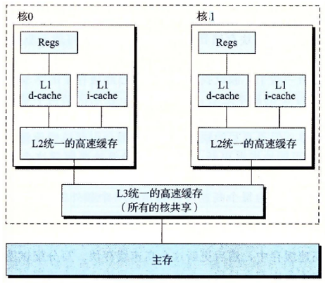

Java内存模型与线程
硬件与效率的一致性
如果不希望处理器在大部分时间里都处于等待其它资源的状态，就必须使用一些手段去把处理器的运算能力“压榨”出来，否者就会造成很大的浪费，而让计算机同时处理几项任务是最容易想到、也被证明是非常有效的“压榨”手段。
除了充分利用计算机处理器的能力外，一个服务端同时对多个客户端提供服务则是另一个更具体的并发应用场景。衡量一个服务性能的高低好坏，每秒事务处理数（Transactions Per Second，TPS）是最重要的指标之一，它代表着一秒内服务平均能响应的请求总数，而TPS值与程序的并发能力又有非常密切的关系。
在实际任务处理中，不可避免的需要和I/O打交道，由于计算机的存储设备与处理器的运算速度有几个数量级的差距，所以现代计算机系统都在CPU和内存之间增加了高速缓存（Cache）：将运算需要使用的数据复制到缓存中，让运算能快速进行，当运算结束后再从缓存同步回内存之中，这样处理器就无需等待缓慢的内存读写了。
基于高速缓存的存储机构很好地解决了处理器与内存的速度矛盾，但引入了一个新的问题：缓存一致性（Cache Coherence）。

缓存一致性问题是指，核0缓存中数据和核1缓存中数据的一致性问题。缓存一致性协议：保证核0中数据更新后，核1中数据失效。
除了增加高速缓存缓存之外，为了使得处理器内部的运算单元能尽量被充分利用，处理器会对输入代码进行乱序执行（Out-Of-Order Ececution）优化。
缓存一致性和volatile之间的却别与联系
缓存一致性协议是系统层面的，volatile是JVM定义的关键字，用来保存并发场景的数据一致性。
Java内存模型
定义Java内存模型（Java Memory Model, JMM）的目的是用来屏蔽掉各种硬件和操作系统的内存访问差异，以实现让Java程序在各个平台下都能达到一致的内存访问效果。模型定义的必须足够严谨，才能让Java的并发内存访问操作不会产生歧义；但是，也必须定义得足够宽松，使得虚拟机的实现有足够的自由空间去利用硬件的各种特性（寄存器、高速缓存和指令集中某些特有的指令）来获取更好的执行速度。从JDK1.5发布后，内部模型已经成熟和完善起来。